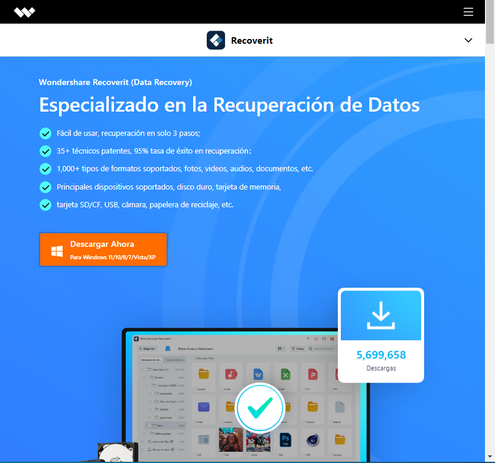
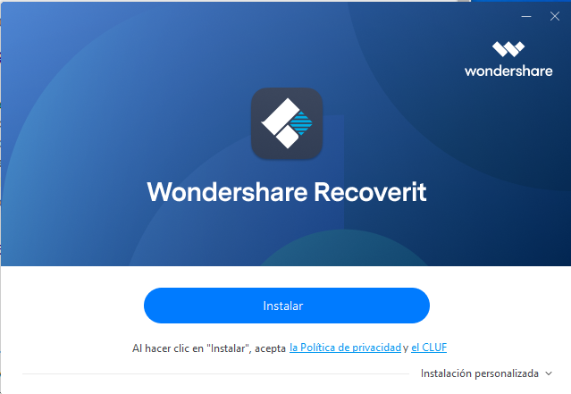

Como programa de mantenimiento y de recuperación de datos, Recoverit es una buena opción
Est programa está disponible de forma gratuita en su página web
Hacemos click en descargar y se nos iniciará automáticamente la descarga
Instalamos como siempre, simplemente ejecutando el .exe como administrador
Simplemente haciendo click en instalar, el proceso se hace automáticamente